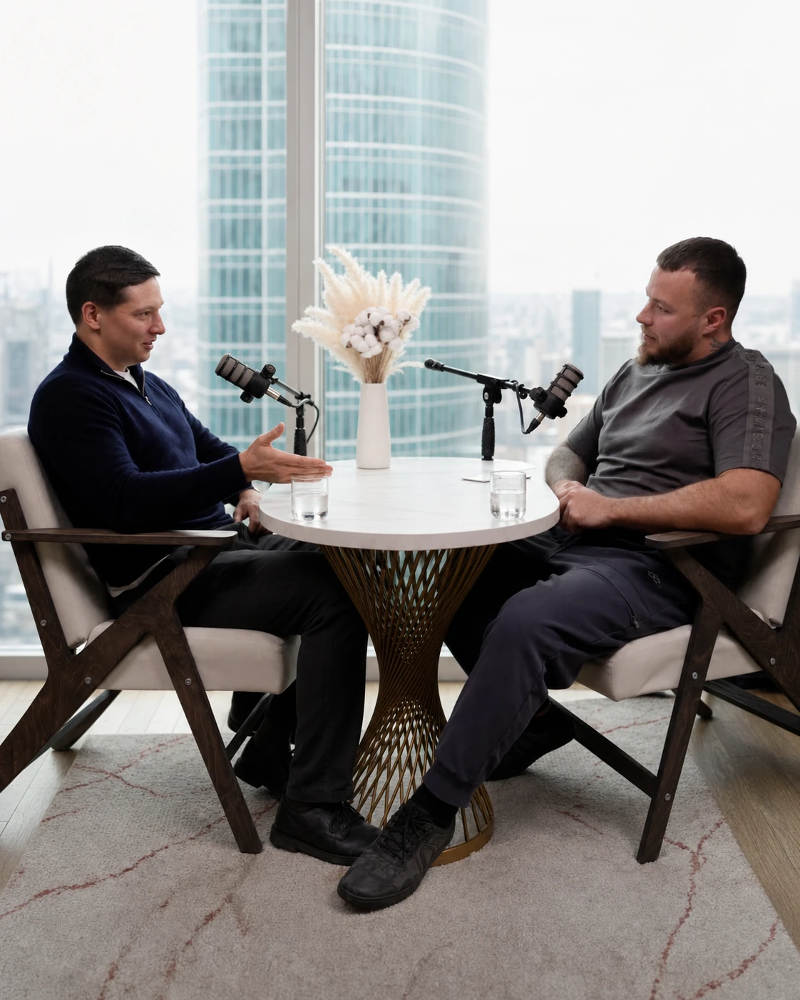
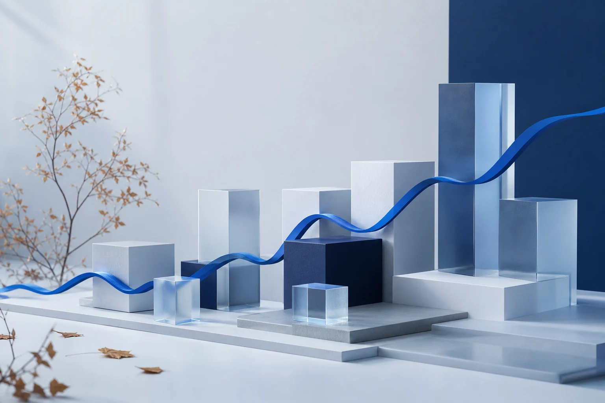

Блог и новости
Исследования, технологии и разговоры о том, как данные, алгоритмы и дисциплина превращаются в инвестиционные решения.
Остап Бендер знал 400 сравнительно честных способов отъёма денег у населения
Что осталось от советских вкладов после трёх десятилетий инфляции — и как сложный процент меняет масштаб компенсации.
↗
Приватизация 2022 года. Схематозы публичных компаний. Чем обеспечена крипта
Владимир Назаров беседует с Никитой Гришуниным — директором по работе с клиентами.
↗Итоги консервативного портфеля за декабрь и весь 2024 год
Разбираем результаты года — спокойно, последовательно и без отрыва от принятого уровня риска.
↗
Итоги консервативного портфеля стратегий за ноябрь 2024
Ежемесячный обзор динамики стратегий и ключевых факторов, повлиявших на результат.
↗Как устроено IT-решение по автоматизации инвестиций Quant Hill
Роман Хохломин объясняет, как собственная платформа связывает данные, риск и исполнение сделок.
↗Стратегии Quant Hill: как подключить и получать результат
О счёте инвестора, API-подключении и последовательности запуска выбранной стратегии.
↗Игорь Шепелев. Трендовые стратегии: ключ к долгосрочной прибыли
Почему дисциплина следования за трендом важнее попытки угадать каждое движение рынка.
↗Андрей Ксенев. Разработка торговых систем: опыт Quant Hill
Практика создания, проверки и эксплуатации алгоритмов в реальной торговой инфраструктуре.
↗